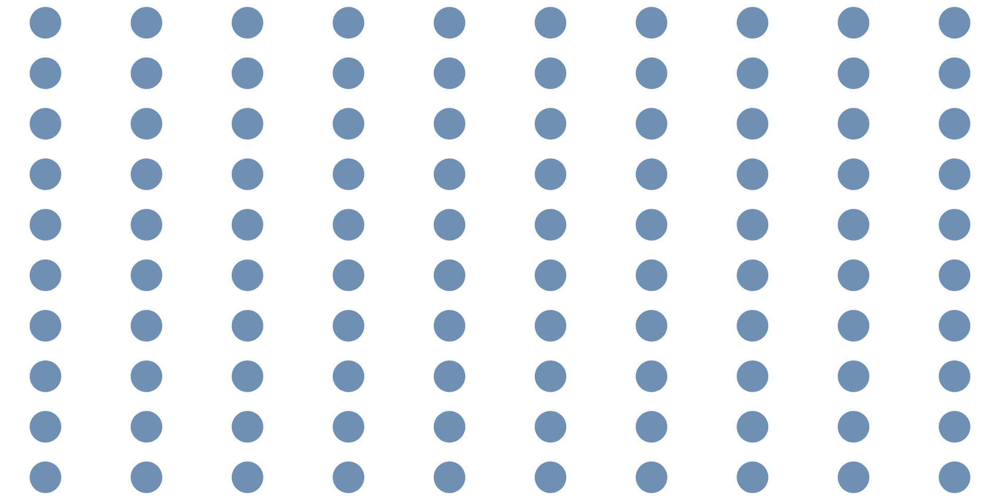
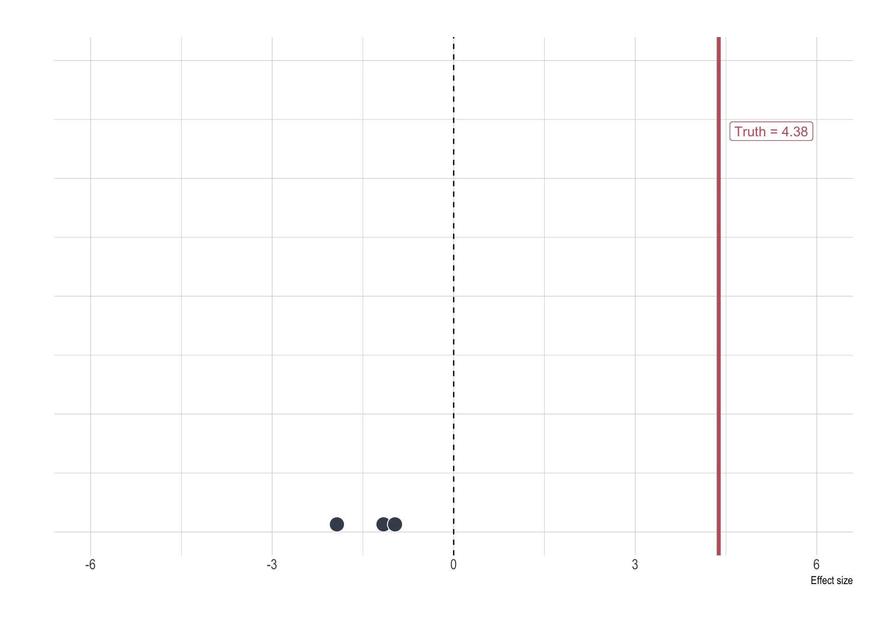

Statistics Review
EC 320, Set 02
Spring 2023
Prologue
\[ \usepackage{amsmath} \]
Housekeeping
The first lab assignment is due Friday at 5p
Due dates
- Problem sets: Tuesday nights at 11:59p
- Lab assignments: Fridays at 5p
The first analytical problem set is due Tuesday. I will post it later tonight. Very short. Very simple
Any issues with R?
- I have office hours Tomorrow from 4p-5p,
- Colleen has office hours Friday, 8a-9a
Motivation
The focus of our course is regression analysis–part of the fundamental toolkit for learning from data.
The underlying theory is critical to grasp the mechanics and pitfalls
- Make us better practitioners and savvier consumers of science.
Today: Review the essential concepts from Math 243
Warning.
The following review is a lot packed in very briefly though you should have learned much of it before. But that being said, it will be overwhelming for most.
Notation
Notation
Data on a variable \(X\) are a sequence of \(n\) observations, indexed by \(i\): \[\{x_i: 1, \dots, n \}.\]
Ex. \(n = 5\)
| \(i\) | \(x_i\) |
|---|---|
| 1 | 8 |
| 2 | 9 |
| 3 | 4 |
| 4 | 7 |
| 5 | 2 |
\(i\) indicates the row number.
\(n\) is the number of rows.
\(x_i\) is the value of \(X\) for row \(i\).
Summation
The summation operator adds a sequence of numbers over an index:
\[ \sum_{i=1}^{n} x_i \equiv x_1 + x_2 + \dots + x_n. \]
The sum of \(x_i\) from 1 to \(n\).
| \(i\) | \(x_i\) |
|---|---|
| 1 | 7 |
| 2 | 4 |
| 3 | 10 |
| 4 | 3 |
\[ \begin{aligned} \sum_{i=1}^{4} x_i = 7 + 4 + 10 + 3 = 23 \\ \frac{1}{n} \sum_{i=1}^n x_i \rightarrow \frac{1}{4} \sum_{i=1}^4 x_i &= \ 6 \end{aligned} \]
Summation
The summation operator adds a sequence of numbers over an index:
\[ \sum_{i=1}^{n} x_i \equiv x_1 + x_2 + \dots + x_n. \]
The sum of \(x_i\) from 1 to \(n\).
| \(i\) | \(x_i\) |
|---|---|
| 1 | 7 |
| 2 | 4 |
| 3 | 10 |
| 4 | 3 |
\[ \begin{aligned} \sum_{i=1}^{4} x_i = 7 + 4 + 10 + 3 = 23 \\ {\scriptsize \text{sample average}} \Bigg \{ \frac{1}{n} \sum_{i=1}^n x_i \rightarrow \frac{1}{4} \sum_{i=1}^4 x_i &= \ 6 \end{aligned} \]
Summation: Rule 01
For any constant \(c\),
\[ \sum_{i=1}^{n} c = nc. \]
| \(i\) | \(c\) |
|---|---|
| 1 | 2 |
| 2 | 2 |
| 3 | 2 |
| 4 | 2 |
\[ \begin{aligned} \sum_{i=1}^{4} 2 &= 4 \times 2 \\ &= 8 \end{aligned} \]
Summation: Rule 02
For any constant \(c\), \[\sum_{i=1}^{n} cx_i = c \sum_{i=1}^{n} x_i.\]
| \(i\) | \(c\) | \(x_i\) |
|---|---|---|
| 1 | 2 | 7 |
| 2 | 2 | 4 |
| 3 | 2 | 10 |
\[\begin{align} \sum_{i=1}^{3} 2x_i &= 2\times7 + 2\times4 + 2 \times10\\ &= 14 + 8 + 20 = 42 \\ 2 \sum_{i=1}^{3} x_i &= 2(7 + 4 + 10) = 42 \end{align}\]
Summation: Rule 03
If \(\{(x_i, y_i): 1, \dots, n \}\) is a set of \(n\) pairs, and \(a\) and \(b\) are constants, then \[\sum_{i=1}^{n} (ax_i + by_i) = a \sum_{i=1}^{n} x_i + b \sum_{i=1}^{n} y_i.\]
| \(i\) | \(a\) | \(x_i\) | \(b\) | \(y_i\) |
|---|---|---|---|---|
| 1 | 2 | 7 | 1 | 4 |
| 2 | 2 | 4 | 1 | 2 |
\[\begin{align} \sum_{i=1}^{2} (2x_i + y_i) &= 18 + 10 = 28 \\ 2 \sum_{i=1}^{2} x_i + \sum_{i=1}^{2} y_i &= 2 \times 11 + 6 = 28 \end{align}\]
Summation: Caution 01
The sum of the ratios is not the ratio of the sums: \[ {\color{#81A1C1}{\sum_{i=1}^{n} x_i / y_i}} \neq \color{#B48EAD}{\left(\sum_{i=1}^{n} x_i \right) \Bigg/ \left(\sum_{i=1}^{n} y_i \right)} \]
Ex.
If \(n = 2\), then \(\frac{x_1}{y_1} + \frac{x_2}{y_2} \neq \frac{x_1 + x_2}{y_1 + y_2}\).
Summation: Caution 02
The sum of squares is not the square of the sums: \[ \color{#81A1C1}{\sum_{i=1}^{n} x_i^2} \neq \color{#B48EAD}{\left(\sum_{i=1}^{n} x_i \right)^2}. \]
Ex.
If \(n = 2\), then \(x_1^2 + x_2^2 \neq (x_1 + x_2)^2 = x_1^2 + 2x_1x_2 + x_2^2\).
Cartesian coordinate system
Cartesian plane: 2-D plane defined by two perpendicular number lines:
- x-axis (horizontal)
- y-axis (vertical)
Using these axes, any point in the plane is described using an ordered pair of numbers \((x,y)\)
Cartesian coordinate system
A particular line on this plane takes the form \[ \begin{aligned} y= a+ bx \end{aligned} \] where \(a\) is known as the intercept and \(b\) is the slope.
Any incremental unit increase in \(x\) results in \(y\) increasing by \(b\).
Ex.
Basic probability
Essential definitions
Experiment:
Any procedure that is infinitely repeatable and has a well-defined set of outcomes.
Ex. Flip a coin 10 times and record the number of heads.
Random Variable:
A variable with numerical values determined by an experiment or a random phenomenon.
- Describes the sample space of an experiment.
Essential definitions
Sample Space:
The set of potential outcomes an experiment could generate
Ex. The sum of two dice is an integer from 2 to 12.
Event:
A subset of the sample space or a combination of outcomes.
Ex. Rolling a two or a four.
Random variables
Notation: Capital letters for random variables (e.g., \(X\), \(Y\), or \(Z\)) and lowercase letters for particular outcomes (e.g., \(x\), \(y\), or \(z\)).
Experiment
Flipping a coin.
Events:
Heads or tails.
Random Variable: (\(X\))
Receive $1 if heads, \(x_i=1\), pay $1 if tails, \(x_i=-1\)
Sample Space:
\(\{-1,1\}\)
Discrete random variables
A random variable that takes a countable set of values.
Bernoulli (binary) random variable
Random variable that takes values of either 1 or 0.
- Characterized by \(P(X=1)\), “the probability of success.”
- Probabilities sum to 1: \(P(X=1) + P(X=0) = 1\)
- More generally, if \(P(X=1) = \theta\) for some \(\theta \in [0,1]\), then \(P(X=0) = 1 - \theta\).
Discrete Random Variables: Probabilities
We describe a discrete random variable by listing its possible values with associated probabilities.
If \(X\) takes on \(k\) possible values \(\{x_1, \dots, x_k\}\), then the probabilities \(p_1, p_2, \dots, p_k\) are defined by \[p_j = P(X=x_j), \quad j = 1,2, \dots, k,\] where \[p_j \in [0,1]\] and \[p_1 + p_2 + \dots + p_k = 1.\]
Discrete Random Variables
Probability density function (pdf)
The pdf of \(X\) summarizes possible outcomes and associated probabilities:
\[f(x_j)=p_j, \quad j=1,2,\dots,k.\]
Ex. 2020 Presidential election: 538 electoral votes at stake.
- \(\{X:0,1, \dots, 538\}\) is the number of votes won.
- Unlikely that one will win 0 or 538 votes: \(f(0) \approx 0\) and \(f(538) \approx 0\).
- Nonzero probability of winning an exact majority: \(f(270) > 0\).
Discrete random variables Ex.
Basketball player goes to the foul line to shoot two free throws.
- \(X\) is the number of shots made (either 0, 1, or 2).
- The pdf of \(X\) is \(f(0)= 0.3\), \(f(1) = 0.4\), \(f(2) = 0.3\).1
Use the pdf to calculate the probability of the event that the player makes at least one shot, i.e., \(P(X \geq 1)\).
\[ P(X \geq 1) = P(X=1) + P(X=2)= 0.4 + 0.3 = 0.7 \]
Continuous random variables
A random variable that takes any real value with zero probability.
Wait, what?! The variable takes so many values that we can’t count all possibilities, so the probability of any one particular value is zero.
Measurement is discrete (e.g., dollars and cents), but variables with many possible values are best treated as continuous.
- e.g., electoral votes, height, wages, temperature, etc.
Continuous random variables
Probability density functions also describe continuous random variables.
Difference between continuous and discrete PDFs
- Interested in the probability of events within a range of values.
- e.g. What is the probability of more than 1 inch of rain tomorrow?
Distributions
Distributions
Function that represents all outcomes of a random variable and the corresponding probabilities.
- Summary that describes the spread of data points in a set
- Essential for making inferences and assumptions from data
Key Takeaway: The shape of a distribution provides valuable information
Uniform distribution
The probability density function of a variable uniformly distributed between 0 and 2 is
\[ f(x) = \begin{cases} \frac{1}{2} & \text{if } 0 \leq x \leq 2 \\ 0 & \text{otherwise} \end{cases} \]
Uniform distribution
By definition, the area under \(f(x)\) is equal to 1.
The shaded area illustrates the probability of the event \(1 \leq X \leq 1.5\).
\[ P(1 \leq X \leq 1.5) = (1.5-1) \times0.5 = 0.25 \]
Normal Distribution
The “bell curve”
- Symmetric: mean and median occur at the same point (i.e., no skew).
- Low-probability events in tails; high-probability events near center.
Normal Distribution
The shaded area illustrates the probability of the event \(-2 \leq X \leq 2\).
- “Find area under curve” = use integral calculus (or, in practice, R). \[ P(-2 \leq X \leq 2) \approx 0.95 \]
Normal Distribution
Continuous distribution where \(x_i\) takes the value of any real number (\({\mathbb{R}}\))
- Domain spans the entire real line
- Centered on the distribution mean \(\mu\)
Rule 1: The probability that the random variable takes a value \(x_i\) is 0 for any \(x_i\in {\mathbb{R}}\)
Rule 2: The probability that the random variable falls between \([x_i,x_j]\) range, where \(x_i \neq x_j\), is the area under \(p(x)\) between those two values
The area above represents \(p(x)=0.95\). The values \(\{-1.96, 1.96\}\) represent the 95% confidence interval for \(\mu\).
Moments
Moments
Quantitative measures used to describe the shape and characteristics of a probability distribution1
Summarize and understand the important features of a distribution
First moment: Mean
Second moment: Variance
Third moment: Skewness
Fourth moment: Kurtosis
\(\quad \quad \quad \vdots\)
Expected Value
Describes the central tendency of distribution in a single number.1
Density functions describe the entire distribution, but sometimes we just want a summary.
Other summary statistics we may be interested in include
- Median
- Standard deviation
- 25th percentile
- 75th percentile
Expected Value (discrete)
The expected value of a discrete random variable \(X\) is the weighted average of its \(k\) values \(\{x_1, \dots, x_k\}\) and their associated probabilities:
\[ \begin{aligned} E(X) &= x_1 P(x_1) + x_2 P(x_2) + \dots +x_k P(x_k) \\ &= \sum_{j=1}^{k} x_jP(x_j). \end{aligned} \]
AKA: Population mean
Expected Value Ex.
Rolling a six-sided die once can take values \(\{1, 2, 3, 4, 5, 6\}\), each with equal probability. What is the expected value of a roll?
\[ \begin{align*} E(\text{Roll}) = 1 \times \frac{1}{6} &+ 2 \times \frac{1}{6} + 3 \times \frac{1}{6} + 4 \times \frac{1}{6} \\ &+ 5 \times \frac{1}{6} + 6 \times \frac{1}{6} = {3.5} \end{align*} \]
Note: The EV can be a number that isn’t a possible outcome of \(X\).
Expected value (continuous)
If \(X\) is a continuous random variable and \(f(x)\) is its probability density function, then the expected value of \(X\)1 is
\[ E(X) = \int_{-\infty}^{\infty} x f(x) dx. \]
Expected value: Rule 01
For any constant \(c\), \(E(c) = c\). Ex.
- \(E(5) =\) \(5\).
- \(E(1) =\) \(1\).
- \(E(4700) =\) \(4700\).
Expected value: Rule 02
For any constants \(a\) and \(b\), \(E(aX + b) = aE(X) + b\).
Ex. Suppose \(X\) is the high temperature in degrees Celsius in Eugene during August. The long-run average is \(E(X) = 28\). If \(Y\) is the temperature in degrees Fahrenheit, then \(Y = 32 + \frac{9}{5} X\). What is \(\color{#b48ead}{E(Y)}\)?
\[ E(Y) = 32 + \frac{9}{5} E(X) = 32 + \frac{9}{5} \times 28 = \color{#b48ead}{82.4} \]
Expected value: Rule 03
If \(\{a_1, a_2, \dots , a_n\}\) are constants and \(\{X_1, X_2, \dots , X_n\}\) are random variables, then
\[ {\scriptsize \color{#4c566a}{E(a_1 X_1 + a_2 X_2 + \dots + a_n X_n)} = \color{#81A1C1}{a_1 E(X_1) + a_2 E(X_2) + \dots + a_n E(X_n)}} \]
In English, the expected value of the sum = the sum of expected values.
Expected value: Rule 03
The expected value of the sum = the sum of expected values.
Ex. Suppose that a coffee shop sells \(X_1\) small, \(X_2\) medium, and \(X_3\) large caffeinated beverages in a day. The quantities sold are random with expected values \(E(X_1) = 43\), \(E(X_2) = 56\), and \(E(X_3) = 21\). The prices of small, medium, and large beverages are \(1.75\), \(2.50\), and \(3.25\) dollars. What is expected revenue?
\[ \begin{align*} \color{#4c566a}{\scriptsize E(1.75 X_1 + 2.50 X_2 + 3.35 X_3)} &= \color{#81A1C1}{\scriptsize 1.75 E(X_1) + 2.50 E(X_2) + 3.25 E(X_3)} \\ &= \color{#b48ead}{\scriptsize 1.75(43) + 2.50(56) + 3.25(21)} \\ &= \color{#b48ead}{\scriptsize 283.5} \end{align*} \]
Expected value: Caution
Previously, we found that the expected value of rolling a six-sided die is \(E \left(\text{Roll} \right) = 3.5\).
- If we square this number, we get \(\left[E ( \text{Roll} ) \right]^2 = 12.25\).
Is \(\left[E \left( \text{Roll} \right) \right]^2\) the same as \(E \left(\text{Roll}^2 \right)\)?
\[ \begin{align*} E \left( \text{Roll}^2 \right) &= 1^2 \times \frac{1}{6} + 2^2 \times \frac{1}{6} + 3^2 \times \frac{1}{6} + 4^2 \times \frac{1}{6} \\ &\quad \qquad \qquad + 5^2 \times \frac{1}{6} + 6^2 \times \frac{1}{6} \\ &\approx 15.167 \neq 12.25. \end{align*} \]
No!
Expected value: Caution
Except in special cases, the transformation of an expected value is note the expected value of a transformed random variable.
For some function \(g(\cdot)\), it is typically the case that
\[\color{#4c566a}{g \left( E(X) \right)} \neq \color{#81A1C1}{E \left( g(X) \right)}.\]
Variance
Random variables \(\color{#b48ead}{X}\) and \(\color{#81A1C1}{Y}\) share the same population mean, but are distributed differently.

Variance (\(\sigma^2\))
Tells us how far \(X\) deviates from \(\mu\), on average:
\[ \mathop{\text{Var}}(X) \equiv \mathbf{P}\left( (X - \mu)^2 \right) = \sigma^2 \]
Where: \(\mu = E(X)\).
How tightly is a random variable distributed about its mean?
Describe the distance of \(X\) from its population mean \(\mu\) as the squared difference: \((X - \mu)^2\).
- Distributing the terms above yields \(\sigma^2 = E(X^2 - 2X \mu + \mu^2) = E(X^2) - 2 \mu^2 + \mu^2 = E(X^2) - \mu^2\).
Variance: Rule 01
\(\mathop{\text{Var}}(X) = 0 \iff X\) is a constant.
- A random variable that never deviates from its mean has zero variance.
Wait what? How can a random variable be a constant?? Because a constant fits the technical definition of a random variable1. It’s just not-so-random
Variance: Rule 02
For any constants \(a\) and \(b\), \(\mathop{\text{Var}}(aX + b) = a^2\mathop{\text{Var}}(X)\).
Ex. Suppose \(X\) is the high temperature in degrees Celsius in Eugene during August. If \(Y\) is the temperature in degrees Fahrenheit, then \(Y = 32 + \frac{9}{5} X\). What is \(\color{#81A1C1}{\mathop{\text{Var}}(Y)}\)?
\[ \mathop{\text{Var}}(Y) = (\frac{9}{5})^2 \mathop{\text{Var}}(X) = \color{#81A1C1}{\frac{81}{25} \mathop{\text{Var}}(X)} \]
Standard Deviation (\(\sigma\))
The positive square root of the variance:
\[ \mathop{\text{sd}}(X) = +\sqrt{\mathop{\text{Var}}(X)} = \sigma \]
Rule 01: For any constant \(c\), \(\mathop{\text{sd}}(c) = 0\).
Rule 02: For any constants \(a\) and \(b\), \(\mathop{\text{sd}}(aX + b) = \left| a \right|\mathop{\text{sd}}(X)\).
Note: The same as variance, almost
Standardizing a random variable
When we’re working with a random variable \(X\) with an unfamiliar scale, it is useful to standardize it by defining a new variable \(Z\):
\[ Z \equiv \frac{X - \mu}{\sigma}. \]
\(Z\) has mean \(0\) and standard deviation \(1\). How?
- First, some simple trickery: \(Z = aX + b\), where \(a \equiv \frac{1}{\sigma}\) and \(b \equiv - \frac{\mu}{\sigma}\).
- \(E(Z) = a E(X) + b = \mu \frac{1}{\sigma} - \frac{\mu}{\sigma} = 0\).
- \(\text{Var}(Z) = a^2\text{Var}(X) = \frac{1}{\sigma^2} \sigma^2 = 1\).
Covariance
For two random variables X and Y, the covariance is defined as the expected value (or mean) of the product of their deviations from their individual expected values:
\[ \mathop{\text{Cov}}(X, Y) \equiv E \left[ (X - \mu_X) (Y - \mu_Y) \right] = \sigma_{xy} \]
Idea: Characterize the relationship between random variables \(X\) and \(Y\).
Positive correlation: When \(\sigma_{xy} > 0\), then \(X\) is above its mean when \(Y\) is above its mean, on average.
Negative correlation: When \(\sigma_{xy} < 0\), then \(X\) is below its mean when \(Y\) is above its mean, on average.
Covariance: Rule 01
Statistical independence:
If \(X\) and \(Y\) are independent, then \(\mathop{\mathbb{E}}(XY) = \mathop{\mathbb{E}}(X)\mathop{\mathbb{E}}(Y)\).
- If \(X\) and \(Y\) are independent, then \(\mathop{\text{Cov}}(X, Y) = 0\).
Caution: \(\mathop{\text{Cov}}(X, Y) = 0\) does not imply that \(X\) and \(Y\) are independent.
- \(\mathop{\text{Cov}}(X, Y) = 0\) means that \(X\) and \(Y\) are uncorrelated.
Covariance: Rule 02
For any constants \(a\), \(b\), \(c\), and \(d\),
\[ \mathop{\text{Cov}}(aX + b, cY + d) = ac\mathop{\text{Cov}}(X, Y) \]
Correlation Coefficient
A problem with covariance is that it is sensitive to units of measurement.
The correlation coefficient solves this problem by rescaling the covariance:
\[ \mathop{\text{Corr}}(X,Y) \equiv \frac{\mathop{\text{Cov}}(X,Y)}{\mathop{\text{sd}}(X) \times \mathop{\text{sd}}(Y)} = \frac{\sigma_{XY}}{\sigma_X \sigma_Y}. \]
Also denoted as \(\rho_{XY}\).
\(-1 \leq \mathop{\text{Corr}}(X,Y) \leq 1\)
Invariant to scale: if I double \(Y\), \(\mathop{\text{Corr}}(X,Y)\) will not change.
Correlation Coefficient
Perfect positive correlation: \(\mathop{\text{Corr}}(X,Y) = 1\).

Correlation Coefficient
Perfect negative correlation: \(\mathop{\text{Corr}}(X,Y) = -1\).

Correlation Coefficient
Positive correlation: \(\mathop{\text{Corr}}(X,Y) > 0\).

Correlation Coefficient
Negative correlation: \(\mathop{\text{Corr}}(X,Y) < 0\).

Correlation Coefficient
No correlation: \(\mathop{\text{Corr}}(X,Y) = 0\).

Variance: Rule 03
For constants \(a\) and \(b\),
\[ \mathop{\text{Var}} (aX + bY) = a^2 \mathop{\text{Var}}(X) + b^2 \mathop{\text{Var}}(Y) + 2ab\mathop{\text{Cov}}(X, Y). \]
If \(X\) and \(Y\) are uncorrelated, then \(\mathop{\text{Var}} (X + Y) = \mathop{\text{Var}}(X) + \mathop{\text{Var}}(Y)\)
If \(X\) and \(Y\) are uncorrelated, then \(\mathop{\text{Var}} (X - Y) = \mathop{\text{Var}}(X) + \mathop{\text{Var}}(Y)\)
Estimators
Estimators
Why do we estimate things?
Suppose we want to know the average height of the population in the US
- We have a sample 1 million Americans
How can we use these data to estimate the height of the population?
Estimators
Estimand:
Quantity that is to be estimated in a statistical analysis
Estimator:
A rule (or formula) for estimating an unknown population parameter given a sample of data.
Estimate:
A specific numerical value that we obtain from the sample data by applying the estimator.
Estimators Ex.
Suppose we want to know the average height of the population in the US
- We have a sample 1 million Americans
Estimand: The population mean (\(\mu\))
Estimator: The sample mean (\(\bar{X}\))
\[ \bar{X} = \dfrac{1}{n} \sum_{i=1}^n X_i \]
Estimate: The sample mean (\(\hat{\mu} = 5\text{'}6\text{''}\))
Properties of estimators
Imagine that we want to estimate an unknown parameter \(\mu\), and we know the distributions of three competing estimators. Which one should we use?

Properties of estimators
Question What properties make an estimator reliable?
Answer (1): Unbiasedness
On average, does the estimator tend toward the correct value?
More formally: Does the mean of estimator’s distribution equal the parameter it estimates?
\[ \mathop{\text{Bias}_\mu} \left( \hat{\mu} \right) = \mathop{\mathbb{E}}\left[ \hat{\mu} \right] - \mu \]
Properties of estimators
Question What properties make an estimator reliable?
A01: Unbiasedness
Unbiased estimator: \(\mathop{\mathbb{E}}\left[ \hat{\mu} \right] = \mu\)

Biased estimator \(\mathop{\mathbb{E}}\left[ \hat{\mu} \right] \neq \mu\)

Unbiasedness example
Is the sample mean \(\frac{1}{n} \sum_{i=1}^n x_i = \hat{\mu}\) an unbiased estimator of the population mean \(E(x_i) = \mu\)?
\[ \begin{aligned} \mathop{\mathbb{E}}\left[ \hat{\mu} \right] &= \mathop{\mathbb{E}}\left[ \frac{1}{n} \sum_{i=1}^n x_i \right] \\ &=\frac{1}{n} \sum_{i=1}^n\mathop{\mathbb{E}}\left[ x_i \right] \quad \big\} \quad \text{rule 3} \\ &=\frac{1}{n} \sum_{i=1}^n \mu \quad \quad \ \ \ \big\} \quad \text{by definition} \\ &= \mu \end{aligned} \]
Properties of estimators
Question What properties make an estimator reliable?
A02: Efficiency (low variance)
The central tendencies (means) of competing distributions are not the only things that matter. We also care about the variance of an estimator.
\[ \mathop{\text{Var}} \left( \hat{\mu} \right) = \mathop{\mathbb{E}}\left[ \left( \hat{\mu} - \mathop{\mathbb{E}}\left[ \hat{\mu} \right] \right)^2 \right] \]
Lower variance estimators produce estimates closer to the mean in each sample.
Properties of estimators
Question What properties make an estimator reliable?
A02: Efficiency (low variance)

The bias-variance tradeoff
Should we be willing to take a bit of bias to reduce the variance
In econ, in causal inference we emphasize unbiasedness

Unbiased estimators
In addition to the sample mean, there are several other unbiased estimators we will use often.
Sample variance estimates variance \(\sigma^2\).
Sample covariance estimates covariance \(\sigma_{XY}\).
Sample correlation estimates the pop. correlation coefficient \(\rho_{XY}\).
Unbiased estimators
Sample variance, \(S_X^2\), is an unbiased estimator of the pop. variance \(\sigma^2\)
\[S_{X}^2 = \dfrac{1}{n-1} \sum_{i=1}^n (X_i - \bar{X})^2.\]
Sample covariance, \(S_{XY}\), is an unbiased estimator of the pop. covariance, \(\sigma_{XY}\)
\[S_{XY} = \dfrac{1}{n-1} \sum_{i=1}^{n} (X_i - \bar{X})(Y_i - \bar{Y}).\]
Unbiased estimators
Sample correlation \(r_{XY}\) is an unbiased estimator of the pop. correlation coefficient \(\rho_{XY}\)
\[r_{XY} = \dfrac{S_{XY}}{\sqrt{S_X^2} \sqrt{S_Y^2}}.\]
Sampling
Sampling
Population:
A group of items or events we would like to know about.
Ex. Americans, games of chess, cats in Eugene, etc.
Parameter:1
a value that describes that population
Ex. Mean height of American, average length of a chess game, median weight of the kitties
Sampling
Sample:
A survey of a subset of the population.
Ex. Respondents to a survey, random sample of econ students at the UO
Often we aim to draw observations randomly from the population
- Advantageous as it becomes a representative sample of the population…
Sampling distributions
Focus: Populations vs Samples
- How can we make inferences about a population based on a small sample of the population?
- How do we learn about an unknown population parameter of interest?
Challenge: Usually missing data of the entire population.
Solution: Sample from the population and estimate the parameter.
- Draw \(n\) observations from the population, then use an estimator.
Sampling distributions
There are myriad ways to produce a sample,1 but we will restrict our attention to simple random sampling, where
Each observation is a random variable.
The \(n\) random variables are independent.
Life becomes much simpler for the econometrician.
Population vs. sample
Question: Why do we care about population vs. sample?

Population vs sample
Question: Why do we care about population vs. sample?
Population vs sample
Question: Why do we care about population vs. sample?
Population vs sample
Question: Why do we care about population vs. sample?
Let’s repeat this 10,000 times and then plot the estimates.
(This exercise is called a Monte Carlo simulation.)
How in the world do I do that
Show the code
# Set the seed
set.seed(12468)
# Set population and sample sizes
n_p <- 100
n_s <- 10
# Generate data
pop_df <- tibble(
x = rnorm(n_p, mean = 2, sd = 20)
)
# Simulation
sim_df <- parallel::mclapply(mc.cores = 4, X = 1:1e4, FUN = function(x, size = n_s) {
pop_df %>%
sample_n(size = size) %>%
summarize(mu_hat = mean(x))
}) %>% do.call(rbind, .) %>% as_tibble()
# Create histogram of simulation
ggplot(data = sim_df, aes(mu_hat)) +
geom_histogram(binwidth = 1, fill = hii, color = "white", size = 0.25, alpha = 0.6) +
geom_vline(xintercept = m0, size = 2, color = hi) +
scale_x_continuous(breaks = m0, labels = TeX(r"($\mu$)")) +
scale_y_continuous(expand = c(0, 0), limits = c(0, NA))+
xlab(latex2exp::TeX(r"($\hat{\mu}$)")) +
theme(axis.text.x = element_text(size = 20),
axis.text.y = element_blank(),
rect = element_blank(),
axis.title.y = element_blank(),
axis.title.x = element_text(size = 20, hjust = 1, color = hi),
line = element_blank())Population vs. sample
Question: Why do we care about population vs. sample?
On average, the mean of the samples are close to the population mean
- Some individual samples can miss the mark.
- The difference between individual samples and the population creates uncertainty
Population vs. sample
Question: Why do we care about population vs. sample?
Answer: Uncertainty matters.
- \(\hat{\mu}\) is a random variable that depends on the sample.
- We don’t know if our sample is representative of the population.
- Individual sample means can be biased
- We have to keep track of this uncertainty.
Population distributions
Consider the following argument (this slide scrolls down)
Suppose we have some estimator \(\hat{\theta}\) for a parameter \(\theta\):
- \(\theta\) is unobserved, but assume \(\hat{\theta}\) follows a probability distribution \(p(\hat{\theta})\)
- We hypothesize some value, say \(\theta = 2.5\)
- We use our estimator \(\hat{\theta}\) to calculate an estimate. \(\hat{\theta} = 45\)
- If we make an assumption of the distribution of \(\hat{\theta}\), we can calculate the probability of getting \(\hat{\theta}= 45\) when \(\theta= 2.5\) is true.
- For sake of argument, let’s say that the probability that \(\theta = 2.5\) if we observe \(\theta = 45\) is less than \(0.001\)
We can say
if \(\theta\) really was 2.5, then the probability of getting \(\hat{\theta} = 45\) is super super low. Thus the probability that \(\theta\) is actually \(2.5\) is super super low”.
- We can make statements about the true value of \(\theta\) just by knowing the distribution of our preferred estimator \(\hat{\theta}\)
But what distribution should we be assuming?
The Central Limit Theorem1
Theorem
Let \(x_1, x_2, \dots, x_n\) be a random sample from a population with mean \(\mathop{\mathbb{E}}\left[ X \right] = \mu\) and variance \(\text{Var}\left( X \right) = \sigma^2 < \infty\), let \(\bar{X}\) be the sample mean. Then, as \(n\rightarrow \infty\), the function \(\frac{\sqrt{n}\left(\bar{X}-\mu\right)}{S_x}\) converges to a Normal Distribution with mean 0 and variance 1.
- CLT states that when \(n \rightarrow \infty\), the sample mean will be normally distributed.
- The Law of Large Number (LLN) states that as \(n \rightarrow \infty\), the sample converges on the population mean.
Hypothesis testing
Hypothesis Testing
How do we assess an estimate of the population mean?
- How likely is it that we have observed this estimate?
- Is it just a coincidence?
- Is is statistically distinguishable from a hypothesized value?
- Should we update out prior beliefs?
We can conduct statistical tests to address these questions.
Hypothesis Testing
Null hypothesis (\(\text{H}_0\)) : \(\mu = \mu_0\)
Alternative hypothesis (\(\text{H}_1\)) : \(\mu \neq \mu_0\)
There are four possible outcomes of our test:
We fail to reject the null hypothesis and the null is true.
We reject the null hypothesis and the null is false.
We reject the null hypothesis, but the null is actually true (Type I error).
We fail to reject the null hypothesis, but the null is actually false (Type II error).
Hypothesis Testing
Four possible outcomes
We fail to reject the null hypothesis and the null is true.
- The defendant was acquitted and he didn’t do the crime.
We reject the null hypothesis and the null is false.
- The defendant was convicted and he did the crime.
Hypothesis Testing
Four possible outcomes
We reject the null hypothesis, but the null is actually true.
- The defendant was convicted, but he didn’t do the crime!
- Type I error (a.k.a. false positive)
We fail to reject the null hypothesis, but the null is actually false.
- The defendant was acquitted, but he did the crime!
- Type II error (a.k.a. false negative)
Hypothesis Testing
\(\hat{\mu}\) is random: it could be anything, even if \(\mu = \mu_0\) is true.
But if \(\mu = 0\) is true, then \(\hat{\mu}\) is unlikely to take values far from zero.
As the variance of \(\hat{\mu}\) shrinks, we are even less likely to observe “extreme” values of \(\hat{\mu}\) (assuming \(\mu = \mu_0\)).
Our test should take extreme values of \(\hat{\mu}\) as evidence against the null hypothesis, but it should also weight them by what we know about the variance of \(\hat{\mu}\).
- For now, we’ll assume that the variable of interest \(X\) is normally distributed with mean \(\mu\) and standard deviation \(\sigma\).
Hypothesis Testing
Reject (\(\text{H}_0\)) if \(\hat{\mu}\) lies in the rejection region.
- The area of the rejection region is defined by the significance level of the test.
- In a 5% test, the area is 0.05.
- Significance level = tolerance for Type I error.
Hypothesis Testing

Reject (\(\text{H}_0\)) if \(\left| z \right| =\left| \dfrac{\hat{\mu} - \mu_0}{\mathop{\text{sd}}(\hat{\mu})} \right| > 1.96\).
What happens to \(z\) as \(\left| \hat{\mu} - \mu_0 \right|\) increases?
What happens to \(z\) as \(\mathop{\text{sd}}(\hat{\mu})\) increases?
Hypothesis Testing
The formula for the \(z\) statistic assumes that we know \(\mathop{\text{sd}}(\hat{\mu})\).
- In practice, we don’t know \(\mathop{\text{sd}}(\hat{\mu})\), so we have to estimate it.
If the variance of \(X\) is \(\sigma^2\), then
\[\sigma^2_{\hat{\mu}} = \dfrac{\sigma^2}{n}.\]
- We can estimate \(\sigma^2\) with the sample variance \(S_{X}^2\).
Hypothesis Testing
The formula for the \(z\) statistic assumes that we know \(\mathop{\text{sd}}(\hat{\mu})\).
- In practice, we don’t know \(\mathop{\text{sd}}(\hat{\mu})\), so we have to estimate it.
The sample variance of the sample mean is
\[S_{\hat{\mu}}^2 = \dfrac{1}{n(n-1)} \sum_{i=1}^n (X_i - \bar{X})^2.\]
Hypothesis Testing
The standard error of \(\hat{\mu}\) is the square root of \(S_{\hat{\mu}}^2\):
\[\mathop{\text{SE}}(\hat{\mu}) = \sqrt{ \dfrac{1}{n(n-1)} \sum_{i=1}^n (X_i - \bar{X})^2}.\]
- Standard error = sample standard deviation of an estimator.
When we use \(\mathop{\text{SE}}(\hat{\mu})\) in place of \(\mathop{\text{sd}}(\hat{\mu})\), the \(z\) statistic becomes a \(t\) statistic:
\[t = \dfrac{\hat{\mu} - \mu_0}{\mathop{\text{SE}}(\hat{\mu})}.\]
Hypothesis Testing
The standard error of \(\hat{\mu}\) is the square root of \(S_{\hat{\mu}}^2\):
\[\mathop{\text{SE}}(\hat{\mu}) = \sqrt{ \dfrac{1}{n(n-1)} \sum_{i=1}^n (X_i - \bar{X})^2}.\]
Standard error = sample standard deviation of an estimator.
Unlike the \(\mathop{\text{SD}}(\hat{\mu})\), \(\mathop{\text{SE}}(\hat{\mu})\) varies from sample to sample.
Consequence: \(t\) statistics do not necessarily have a normal distribution.
Hypothesis Testing
Normal distribution vs. \(t\) distribution
- A normal distribution has the same shape for any sample size.
- The shape of the t distribution depends the degrees of freedom.
- Degrees of freedom = 5.
Hypothesis Testing
Normal distribution vs. \(t\) distribution
- A normal distribution has the same shape for any sample size.
- The shape of the t distribution depends the degrees of freedom.
- Degrees of freedom = 50.
Hypothesis Testing
Normal distribution vs. \(t\) distribution
- A normal distribution has the same shape for any sample size.
- The shape of the t distribution depends the degrees of freedom.
- Degrees of freedom = 500.
Hypothesis Testing
Two sided t Tests
To conduct a t test, compare the \(t\) statistic to the appropriate critical value of the t distribution.
- To find the critical value in a t table, we need the degrees of freedom and the significance level \(\alpha\).
Reject (\(\text{H}_0\)) at the \(\alpha \cdot 100\)-percent level if
\[\left| t \right| = \left| \dfrac{\hat{\mu} - \mu_0}{\mathop{\text{SE}}(\hat{\mu})} \right| > t_\text{crit}.\]
On Your Own
As the term progresses, we will encounter additional flavors of hypothesis testing and other related concepts.
You may find it helpful to review the following topics from Math 243:
- Confidence intervals
- One-sided \(t\) tests
- \(p\) values
Hypothesis testing is an essential tool. Yet the traditional way of teaching hypothesis testing can be unintuitive.
It took me several tries (classes) to fully understand the concept
If you can program, you have direct access to the fundamental ideas in statistics
To demonstrate, consider hypothesis testing
In order to do that, we need a problem…
Does drinking beer make you more attractive to mosquitos?
Hypothesis testing
Though it sounds silly, this research question is important
- Malaria is transmitted via mosquito
- Most model for malaria transmission historically assume equal risk of mosquito bites across individuals
- Though, good evidence of heterogenous propensity bites exist
- Understanding which people might have higher propensity for bites may allow for interventions that reduce the impact of malaria

Here is the data. Treatment group in blue.
Treatment mean: 23.6 Control mean: 19.22
Difference in means: 4.38
Plot the true difference
Suppose the difference is coincidental. Then the labels don’t matter

Treatment mean: 23.6 Control mean: 19.22
Difference in means: 4.38
Suppose the difference is coincidental. Then the labels don’t matter
Treatment mean: 20.96 Control mean: 22.89
False difference in means : -1.93
Plot the “fake” difference
And do it again
Labels don’t matter. Assign treatment randomly. Find the difference.
Treatment mean: 21.36 Control mean: 22.33
False difference in means : -0.97
Plot the difference
And do it again (3 times)
Labels don’t matter. Assign treatment randomly. Find the difference.
Treatment mean: 21.28 Control mean: 22.44
False difference in means : -1.16
Plot the differences
And do it again (4 times)
Labels don’t matter. Assign treatment randomly. Find the difference.
Treatment mean: 21.92 Control mean: 21.56
False difference in means : 0.36
Plot the differences
And do it again (2,500 times)
Plot all 2,500 differences.
Data types
Data
There are two broad types of data
- Experimental data
Data generated in controlled, laboratory settings1
Ideal for causal identification, but difficult to obtain
- Logistically intractable
- Expensive
- Morally repugnant
Data
There are two broad types of data
Experimental data
Observational data
Data generated in non-experimental settings
Types of observational data:
- Surveys
- Census
- Administrative data
- Environmental data
- Transaction data
- Text and image data
Commonly used though poses challenges to causal identification
Data types: Cross sectional
Sample of individuals from a population at a point in time
Ideally collected using random sampling
- random sampling \(+\) sufficient sample size \(=\) representative sample
- Non-random sampling is more common and difficult to work with
Note: Used extensively in applied microeconomics1 and is the main focus of this course
Data types: Time series
Observations of variables over time
Ex.
- Quarterly GDP
- Annual infant mortality rates
- Daily stock prices
Complication: Observations are not independent draws
- eg GDP this quarter is highly correlated to GDP last quarter
More advanced methods needed1
Data types: Pooled cross sectional
Cross sections from different points in time
Useful for studying relationship that change over time.
Again, requires more advanced methods1
Data types: Panel data
Time series for each cross sectional unit
Ex. Daily attendance across my class
Can control for unobserved characteristics
Again, requires more advanced methods1
Data types: Messy data
Analysis ready dataset are rare. Most data are messy
Data wrangling is a non-trivial part of an economist or data scientist/analyst’s job
R has a suite of packages1 that facilitate data wrangling:
- The tidyverse:
readr,tidyr,dplyr,ggplot2+ others
EC320, Set 02 | Statistics Review